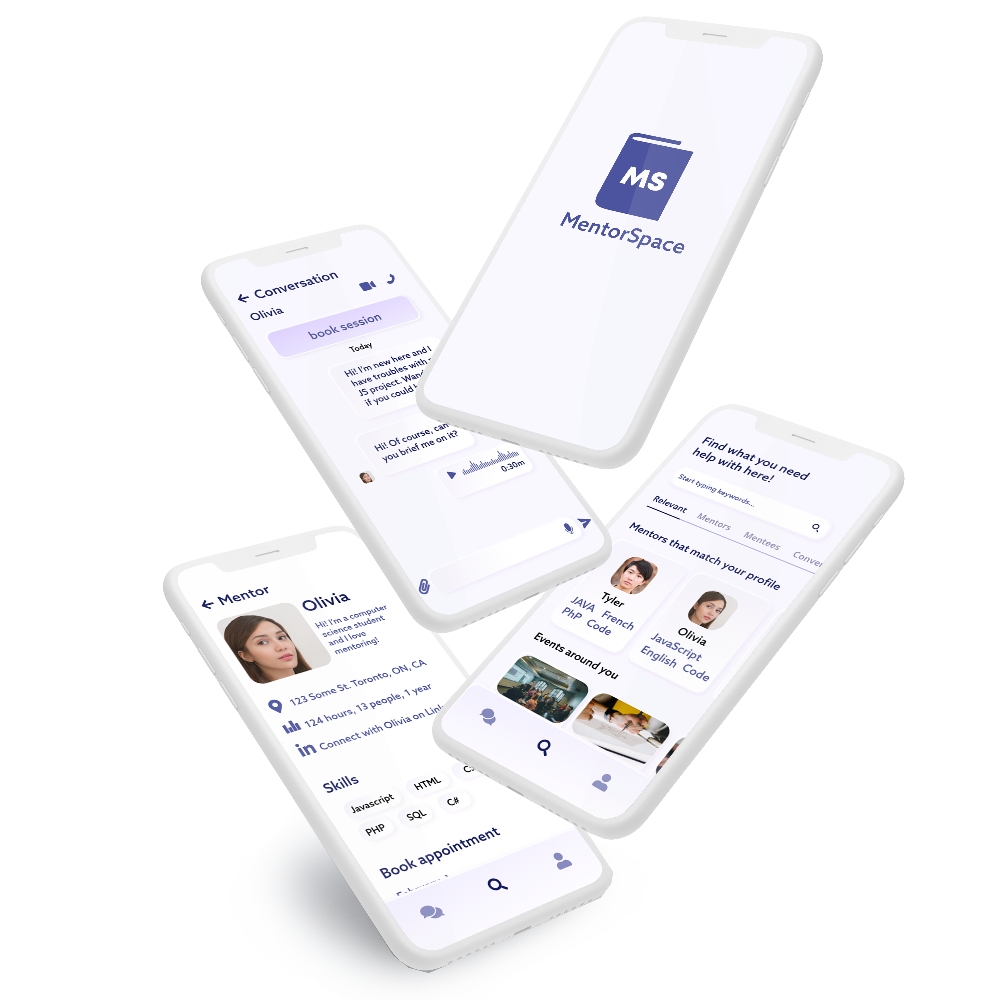
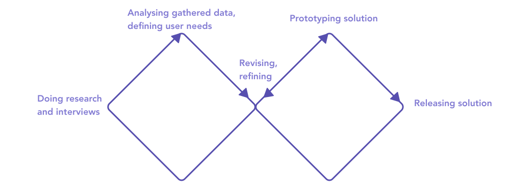

Design solution for mentors and mentees.
Overview
Team
Only me!(Personal project)
Role
Researcher, designer
Tools
Generative Brainstorming, Google suite, Paper prototyping, Adobe XD
Duration
4 days
Design strategy
Double Diamond design thinking methodology to help the creative design process.
